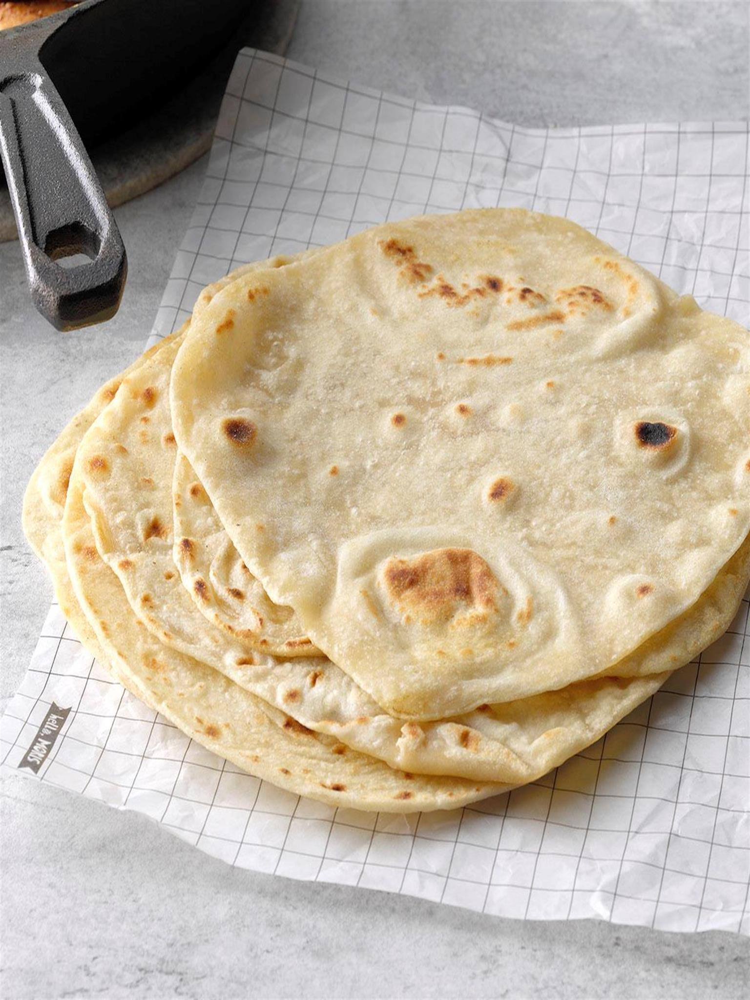

Description
This is how to make homemade tortillas so you don't have to eat store bought garbage.
Ingredients
- 3 cups flour
- 1 tsp salt
- 1tsp baking powder
- 1/4 cup oil
- 1 cup water
Steps
- Combine the dry ingredients together. Slowly add in the oil while the mixer is going.
- Add in water slowly. Continue kneading until the dough isn't sticky. Let the dough sit for about 10 minutes.
- Divide dough into 16 even pieces. On a well-floured surface, roll each piece into a round dough ball.
- On a well-floured surface, roll out each dough ball into a tortilla shape.
- Preheat a skillet over medium-heat. Cook each tortilla for about one minute on the first side and 30 seconds on the other.
- Keep tortillas in a tortilla warmer or kitchen clean kitchen towel until you are ready to serve.
Return to Home